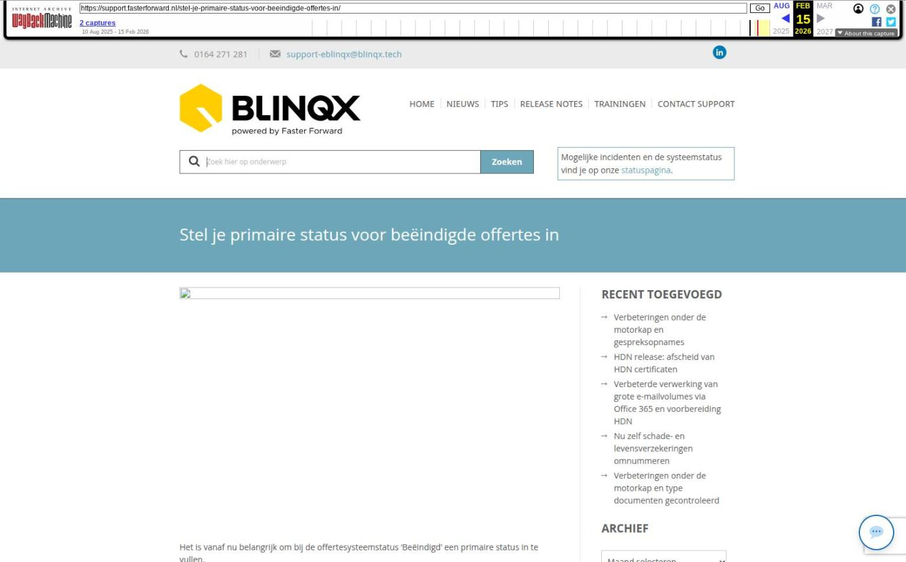

Stel je primaire status voor beëindigde offertes in

Tekstinhoud
Het is vanaf nu belangrijk om bij de offertesysteemstatus ‘Beëindigd’ een primaire status in te vullen.
Het is noodzakelijk dat je de primaire status voor ‘Beëindigd’ invult. Binnenkort is het namelijk mogelijk om een verzekeringspakket in één keer te royeren. Om de bijbehorende verzekeringen de juiste status te geven, is het van belang dat je deze instelt bij ‘Beëindigd’. Als je dit niet doet, weet het systeem namelijk niet welke offertestatus de offertesysteem status ‘Beëindigd’ moet krijgen.
Bovendien is deze inrichting belangrijk, omdat anders je portefeuillewaardeoverzicht niet meer klopt.
Wat moet je doen?
A. Offertestatussen zijn al gekoppeld aan ‘Beëindigd’
Als (onder andere) de offertestatus ‘Beëindigd’ al is gekoppeld aan de offertesysteemstatus ‘Beëindigd’, dan wordt de primaire status automatisch ingevuld met ‘Beëindigd’.
Je hoeft deze dan alleen te controleren en eventueel aan te passen.
B. Offertestatussen zijn nog niet gekoppeld
Als je nog geen offertestatussen hebt gekoppeld aan de offertesysteemstatus ‘Beëindigd’, dan krijg je een melding op je dashboard.
Klik op deze melding en stel gelijk de gewenste primaire status in.
Geplaatst op 2 januari 2022 (Laatste update: 04 mei 2022)